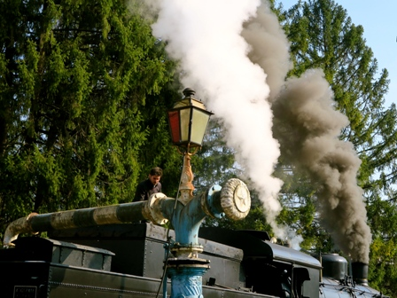
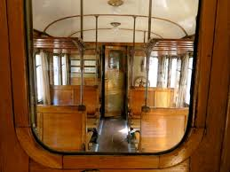
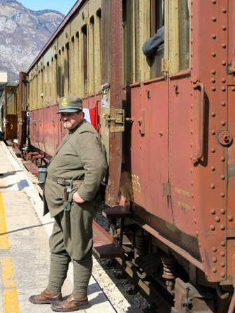

La 740 è una famosa locomotiva, costruita nel periodo a cavallo della prima Guerra Mondiale, anni prima, anni dopo.
L'esemplare che domenica 12 aprile ci ha fumosamente portato dalla piana di Treviso alle Alpi di Longarone è stato costruito dalle Officine Meccaniche e Navali di Napoli nel 1920.
Per gli appassionati della tecnica e dell'archeologia industriale (come il sottoscritto) queste macchine sono dei capolavori assoluti.
117 tonnellate di tecnologia allo stato puro, scolpite nel ferro, nell'acciaio, nel bronzo.
Anni orsono un amico macchinista mi aveva accompagnato in una visita approfondita a bordo di una di queste locomotive (in manutenzione presso le storiche Officine Ferroviarie di Verona), ed ero rimasto sbalordito; seguire il funzionamento del solo "acceleratore" della 740 e dei sui annessi, pesanti dei quintali, lascia senza fiato.
Vengono da paragonare i flussi di controllo della vaporiera a quelli di un cellulare moderno: qui i dati viaggiano negli ultramicrochip con 10 milioni di transistor per mmq, là viaggiano in un labirinto pazzesco di tubetti di ottone verso macroscopici manometri, valvole, rubinetti...
Mezza storia dell'ingegno umano passa certamente tra questi due estremi.
Ecco che quando si è presentata l'occasione di fare un viaggetto sul Treno Storico delle Dolomiti con la 740 non me la sono lasciata scappare, tanto più che le cinque carrozze trainate erano le gloriose "Centoporte" degli anni '20, rigorosamente con i sedili in legno, le maniglione in bronzo pesante delle venti (!!) porte e le antiche fotografie in bianco e nero dietro i sedili ben messe per acculturare il popolo poco viaggiatore di quegli anni.
Sopra la mia testa dov'ero seduto stavano appese "La valle dei templi di Agrigento", il "Rifugio Fuciade", "Piazza Armerina" e le "Dolomiti di Sesto"... tutta l'Italia ci stava, e sia gloria alla Nazione!
Partenza ore otto dalla stazione di Treviso, vapore a profusione e fumo, fumo, tanto fumo, esattamente come ci si aspetta da una locomotiva a vapore.
Fosse adesso queste macchine sarebbero messe fuori legge e condannate a morte in cinque secondi.
Velocità massima 60 Km/ora, milioni di foto lungo tutto il percorso da parte di esterefatti automobilisti e arrivo a Feltre per il rifornimento d'acqua presso l'antica colonna idraulica.
Poi su e su lungo la valle del Piave, fino a Longarone, esattamente sotto la famigerata diga.
Molto interessante la Fiera mercato (in tema) sul modellismo ferroviario, con dei pregevoli omaggi ai partecipanti al viaggio storico, bene organizzato dall'Aics di Belluno.
Al pomeriggio si ritorna, cambiando itinerario e senso di marcia a Ponte nelle Alpi.
Bella esperienza, sempre carinissima e simpatica Treviso; insomma tutti gli ingredienti per un tranquillo week end di primavera.

La 740 si gira a Ponte nelle Alpi

Rifornimento d'acqua e spalatura carbone a Feltre

Interno di un "Centoporte"

"Recluta" in attesa dell'imbarco per la battaglia del Piave...